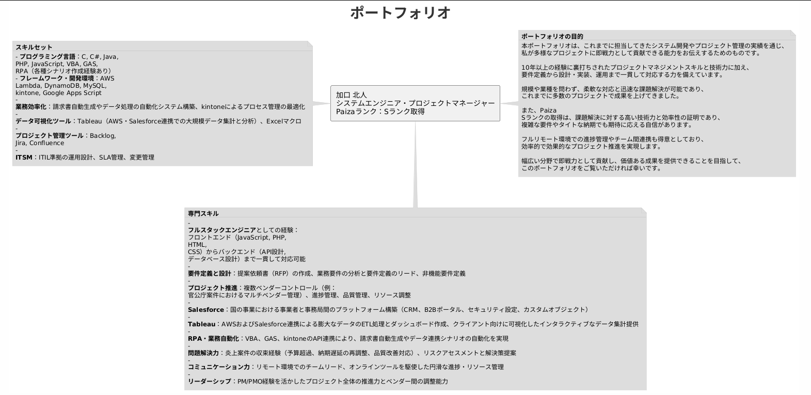

ポートフォリオの目的
プロフィール
加口 北人
システムエンジニア・プロジェクトマネージャー
Paizaランク：Sランク取得
スキルセット
- プログラミング言語: C, C#, Java, PHP, JavaScript, VBA, GAS, RPA
- フレームワーク・開発環境: AWS Lambda, DynamoDB, MySQL, kintone, Google Apps Script
- 業務効率化: 請求書自動生成やデータ処理の自動化システム構築、kintoneによるプロセス管理の最適化
- データ可視化ツール: Tableau（AWS・Salesforce連携での大規模データ集計と分析）、Excelマクロ
- プロジェクト管理ツール: Backlog, Jira, Confluence
- ITSM: ITIL準拠の運用設計、SLA管理、変更管理
専門スキル
- フルスタックエンジニアとしての経験: フロントエンドからバックエンドまで一貫して対応可能
- 要件定義と設計: 提案依頼書（RFP）の作成、業務要件の分析と要件定義のリード
- プロジェクト推進: 複数ベンダーコントロール、進捗管理、品質管理
- Salesforce: 国の事業におけるプラットフォーム構築
- Tableau: AWSおよびSalesforce連携によるデータのETL処理とダッシュボード作成
実装時のイメージ
このリポジトリは、PAIZA Sランク取得スクリプトをデモするためのポートフォリオページです。GitHub Pagesでのライブデモを体験できます。
使用方法
- テキストエリアにJavaScriptコードを入力してください。
- 「実行」ボタンをクリックすると、出力がリアルタイムで表示されます。
例コード
const greet = (name) => `こんにちは、${name}さん！`;
greet('太郎');
プログラムコードの実行と出力
About Me
私はシステムエンジニアで、フルスタック開発とプロジェクト管理を専門としています。さまざまなプロジェクト経験を活かし、貴社に貢献できる即戦力となります。
Projects
Project 1: 医療機関連携開発プロジェクト

プロジェクト概要: 複数の医療機関とデータを共有し、患者の医療データを円滑に管理・参照できるシステムを構築。データの正確性とセキュリティが重要視されるプロジェクトです。
具体的な実績: データセキュリティ対策、プロジェクト計画と進捗管理、医療機関との連携・交渉を担当。
採用後の貢献: セキュリティが求められるシステムでの経験を活かし、貴社のデータ保護強化をサポート。
GitHub リンクProject 2: 大規模映像配信刷新プロジェクト

プロジェクト概要: 映像配信システムの刷新により、ユーザー体験を向上させるためのインフラやUIの改善を実施しました。
具体的な実績: ベンダー管理、負荷試験とパフォーマンス最適化、ユーザーエクスペリエンスの向上を担当。
採用後の貢献: パフォーマンス最適化やUX改善を通じて、貴社のプロジェクト進行を支援。
GitHub リンク